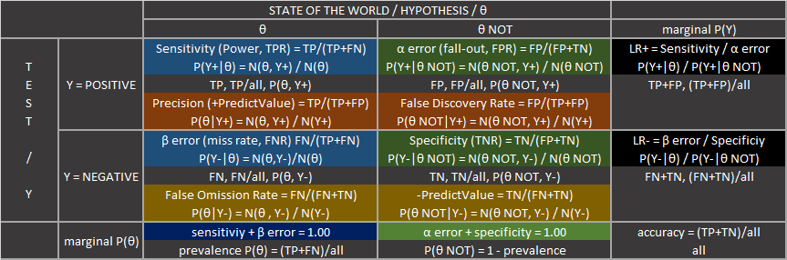
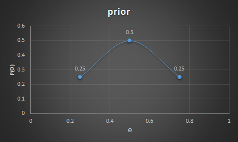
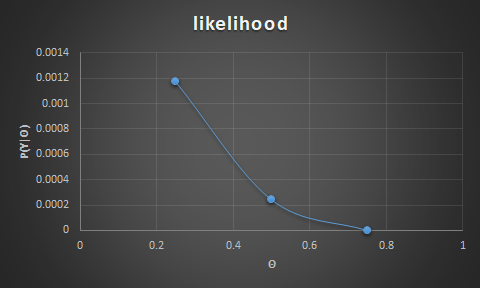
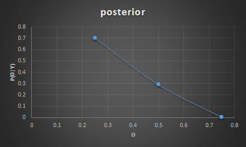

Bayesian
todo
- model comparison
- ch7, 9, 13(power analysis and sample size) + beta distributions
- sec 23.1
Probability, the frequency of the event occurring
- join probability $P(X=value1,Y=valueA) = P(X=value1 \mid Y=valueA) * \sum_x P(X=x,Y=valueA)$
- marginal probability $P(X=value1) = \sum_y P(X=value1,Y=valueA) = \int \mathrm{d}y \ p(x,y)$.
-
conditional probability
\[P(X=value1 \mid Y=valueA) = \frac{P(X=value1, Y=valueA)}{\sum_x P(X=x, Y=valueA)} = \frac{p(x,y)}{\int_x \mathrm{d}x \ p(x,y)} = \frac{P(X=value1, Y=valueA)}{P(Y=valueA)}\]- tell the relation between two different, but related conditionals
- $P(X \mid Y) = P(X,Y) \ /\ P(Y)$ the joint probability of the two events over marginal probability of the conditioned
- take $P(X \mid Y)$ and multiply it by $P(Y)$ => $P(X \mid Y) * P(Y) = P(X,Y)$
- respectively $P(Y \mid X) * P(X) = P(X,Y)$
- equate the two alternative representations of the joint $P(X,Y)$ => $P(X \mid Y) * P(Y) = P(Y \mid X) * P(X)$
- divide by $P(Y)$ => $P(X \mid Y) = \frac{P(Y \mid X) * P(X)}{P(Y)}$
- conditional probability with many events
- $P(X \mid Y,Z) = \frac{P(Y,Z \mid X)}{P(Z,Y)} * P(X)$
- where, $P(Y,Z \mid X) = P(Y \mid X) * P(Z \mid X)$
- and $P(Z,Y) = [P(Y,Z \mid X) * P(X)] + [P(Y,Z \mid X_{NOT}) * P(X_{NOT})]$
- tell the relation between two different, but related conditionals
From prior to updated posterior belief
- Let’s say there is a hypothesis $\theta$ and some data $Y$ to support/oppose it.
- The prior (prevalence) $P(\theta)$ the strength of our belief in $\theta$ without the data $Y$.
- The posterior (precision) $P(\theta \mid Y)$ is the strength of our belief in $\theta$ when tha data $Y$ is taken into account.
- The likelihood (sensitivity, power) $P(Y \mid \theta)$ is the probability that the data could be generated by the model with param values $\theta$.
- The evidence (marginal likelihood) $P(Y)$ is the probability of the data according to the model, determined by summing across all possible param values weighted by the strength of belief in those param values.
- This is a relation between the prior/subjective belief (the expert opinion on the hypothesis) $P(\theta)$ and the posterior/updated belief $P(\theta \mid Y)$ once there is some data to consider.
-
Posterior with two independent events:
\(P(\theta \mid Y,Z) = \frac{P(Y \mid \theta,Z)}{P(Y \mid Z)}\ *\ P(\theta \mid Z)\)
- since $Y$ and $Z$ are independent events => $P(Y \mid \theta,Z) = P(Y \mid \theta)$
- the denominator requires attention too: $P(Y \mid Z) = \frac{P(Y,Z)}{P(Z)}$
Tables
- notes True/False Positive/Negative here refers to the test result (e.g. False Negative means that the test have been incorrectly negative (should have been positive, and that a sick person without disease have a negative test)
- LR+ Positive Likelihood ratio: How much the odds of having a disease increase when test is positive
- LR- Negative Likelihood ratio: How much the odds of not having a disease increase when test is negative
- Power of a binary hypothesis is the probability that a test correctly rejects the $H_0$ when a specific $H_1$ is true = $P(H_0 = reject \mid H_1=true)$. 
Examples
- Example with a disease with $\theta(disease) = (sick, well)$ and $Y(test) = (positive\ \oplus , negative\ \ominus)$. What is the $Pr$ of having a disease when the test is positive (what is the Precision) given that TP rate (Sensitivity) is 0.99, FP rate (Type I error)= 0.09 and Prevalence is 0.02?
| test \ disease | $\theta = sick$ | $\theta = well$ | marginal $P(Y)$ |
|---|---|---|---|
| Y = positive $\oplus$ | 0.99* 0198 0.0198 |
0.09** 0882 0.0882 |
—- 1080 0.1080 |
| Y = negative $\ominus$ | 0.01 0002 0.0002 |
0.91 8918 0.8918 |
—- 8920 0.8920 |
| marginal $P(\theta)$ | 1.00 0200 0.02*** |
1.00 9800 0.98 |
—- 10000 1.00 |
- * likelihood $P(Y\oplus \mid \theta\ sick)$ = $0.99$ // True Positive Rate
- ** $P(Y\oplus \mid \theta\ well)$ = $0.09$ // False Positive Rate
- *** prior belief $P(\theta\ sick) = 0.02$
- evidence $P(Y\oplus) = P(Y\oplus, \theta\ sick) + P(Y\oplus, \theta\ well)$ = $(0.990.02) + (0.090.98) = 0.1080$
- posterior $P(\theta\ sick \mid Y\oplus) = P(Y\oplus \mid \theta\ sick) \ / \ P(Y\oplus) * P(\theta\ sick)$ = $0.99\ /\ 0.108 * 0.02 = 0.18333$
-
conditional $P(\theta\ sick \mid Y\oplus) = P(\theta\ sick\ , \ Y\oplus) \ / \ P(Y\oplus)$ = $0.0198\ /\ 0.108 = 0.18333$
- Example with coin flipping: prior belief of getting heads is 0.5 half the time (50%) with chances of skewness (0.25 and 0.75) the other half of the time(25% of the time it is 0.25, and 25% of the time it is 0.75); testing data shows 3 heads out of 12 flips; => what is the probability of getting a head on a given flip?
- prior is $\theta = P(heads) = 0.5$ half the time, $0.25$ and $0.75$ the other half of the time.
- 
- Note: for those beliefs, the predicted probability for heads is (using the evidence formula):
- $= P(Y=heads \mid \theta=0.25) * P(\theta=0.25)$
- $+ P(Y=heads \mid \theta=0.5) * P(\theta=0.5)$
- $+ P(Y=heads \mid \theta=0.75) * P(\theta=0.75)$
- $= (0.250.25)+(0.50.5)+(0.25*0.75) = 0.5$
- Note: for those beliefs, the predicted probability for heads is (using the evidence formula):
- likelihood is $P(Y \mid \theta) = \theta^3 \ (1-\theta)^{9}$
- 
- for $P(\theta=heads)=0.25$ the likelihood is $0.25^3 * (1-0.25)^9 = 0.0156 * 0.075 = 0.0012$
- for $P(\theta=heads)=0.5$ the likelihood is $0.5^3 * (1-0.5)^9 = 0.125 * 0.002 = 0.0002$
- for $P(\theta=heads)=0.75$ the likelihood is $0.75^3 * (1-0.75)^9 = 0.4219 * 3.8147E-06 = 1.60933E-06$
- evidence is $P(Y=heads) = \sum_\theta P(Y=heads \mid \theta) \ P(\theta)$ // sum of all joint probabilities
- $= P(Y=heads \mid \theta=0.25) * P(\theta=0.25)$
- $+ P(Y=heads \mid \theta=0.5) * P(\theta=0.5)$
- $+ P(Y=heads \mid \theta=0.75) * P(\theta=0.75)$
- $= (0.00120.25)+(0.00020.5)+(1.60933E-06*0.75) = 0.000417$
- posterior is: $P(\theta \mid Y=heads) = \frac{P(Y=heads \mid theta) * P(\theta)} {P(Y=heads)}$
- 
- for $\theta = 0.25$ the posterior is $0.0012 * 0.25 / 0.000417 = 0.704$
- for $\theta = 0.5$ the posterior is $0.0002 * 0.5 / 0.000417 = 0.293$
- for $\theta = 0.75$ the posterior is $1.60933E-06 * 0.75 / 0.000417 = 0.0029$
Bibliography
- Kruschke - Doing Bayesian data analysis - 2010
- based on Kruschke:
- http://tinyheero.github.io/2016/03/20/basic-prob.html
- http://tinyheero.github.io/2016/04/21/bayes-rule.html
- http://tinyheero.github.io/2017/03/08/how-to-bayesian-infer-101.html
- https://commons.wikimedia.org/wiki/File:Preventive_Medicine_Statistics_Sensitivity_TPR,_Specificity_TNR,_PPV,_NPV,_FDR,_FOR,_ACCuracy,_Likelihood_Ratio,_Diagnostic_Odds_Ratio_2_Final.png
- https://eli.thegreenplace.net/2018/conditional-probability-and-bayes-theorem/